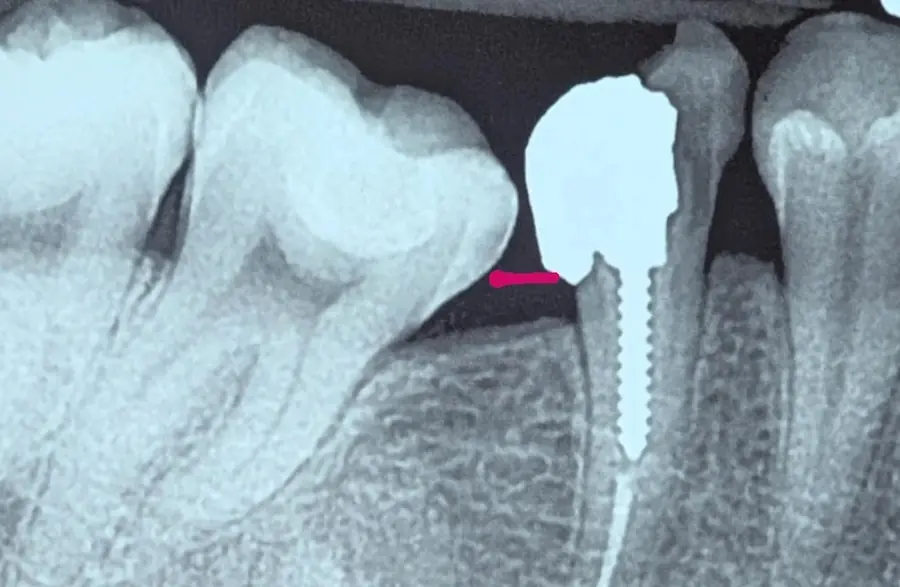

نسخه استخراجشده؛ ترجمه یا تأیید علمی انجام نشده است. وضعیت: captured
بیمار میپرسد آیا دندان ۵ قابل نگهداری است یا نه. پس از حذف کامل پوسیدگیها و ترمیمهای قدیمی، تنها دیوارهی باکال دندان باقی مانده است.

تا اینجا حفظ دندان شدنی به نظر میرسد. اما چالش اصلی جای دیگری است: دندان مجاور. در کلیشه به دندان ۷ نگاه کن؛ چه میبینی؟
دندان ۷ تیلت شدید مزیالی دارد. همین حالا لول لثه (خط قرمز) بهخاطر اتچمنت بالایی که به دندان ۷ دارد، مانع گیر غذایی میشود.
اگر CL انجام شود و لول استخوان و لثه پایین بیاید، بهخاطر شیب شدید دندان ۷، تغییر آناتومی ناحیه یک گیر غذایی شدید و تصاعدی میسازد. این وضعیت هم بیمار را آزار میدهد و هم ریسک پوسیدگی دندان ۷ و مشکلات پریودنتال مزمن را در این ناحیه بهشدت بالا میبرد. برای نجات یک دندان، سلامت دندان مجاور و راحتی بیمار به خطر میافتد.
گاهی تصمیم نگه داشتن یک دندان باید در برابر سلامت دندان مجاور سنجیده شود، نه فقط در برابر پروگنوز خود همان دندان. جراحیای که رادیوگرافیک قابل توجیه به نظر میرسد، وقتی آناتومی دندان مجاور اجازه نمیدهد، دیگر گزینهی درست نیست.